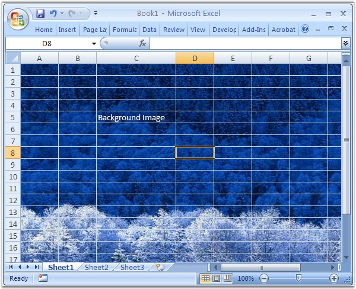

MS Excel enables to set the background for the worksheet with an image, which covers the entire worksheet. Depending upon the image size and type, the background graphic may either be stretched across your worksheet or tiled.
 Note: The sheet backgrounds may tremendously
increase the file size of the workbooks.
Note: The sheet backgrounds may tremendously
increase the file size of the workbooks.
Background images which are set this way, cannot be printed. To set a Watermark that can be printed, you can make use of Headers and Footers. This can be viewed only through the Print Preview option, and it is not visible in the Normal view.
XlsIO provides support for inserting background images through the BackgroundImage property of IPageSetup.
Following code example illustrates how to insert a background image.
|
[C#]
// Setting the Paper Type. sheet.PageSetup.BackgroundImage = image; |
|
[VB.NET]
' Setting the Paper Type. sheet.PageSetup.BackgroundImage = image |

Figure 114: Setting Background Image Using XlsIO